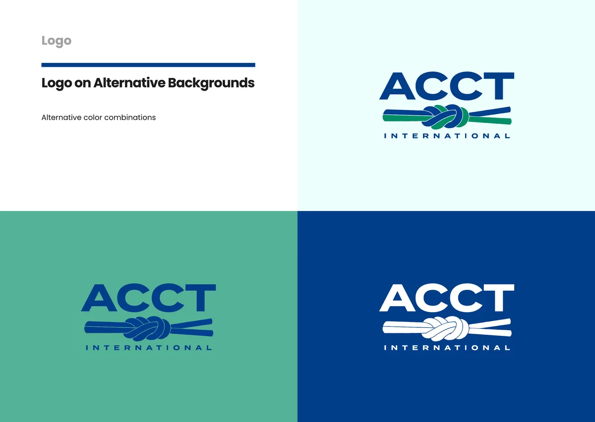

Case study · Brand identity
Rebuilding a brand to work like a safety credential.
I rebuilt a brand identity system that could hold up next to safety regulators and insurance auditors.

Their brand looked like a hobbyist forum.
ACCT is the accrediting body that sets and enforces safety and operating standards for challenge courses. That's the ropes-and-ziplines kind, where a mistake can injure someone. Their brand looked like a hobbyist forum. Safety regulators and insurance auditors decide whether to take you seriously before they read a single page.
Rebuild the identity system from the ground up.
I'd volunteered with ACCT since 2014. In 2024 I rebuilt the identity system from the ground up: logo, type, and the whole visual language. Discovery with board members and staff came first, then a brand audit and a strategy phase that settled on three themes: trust, structure, adventure.
- DiscoveryWith board members and staff, before any design work
- Brand audit
- StrategySettled on three themes: trust, structure, adventure
- RolloutAcross print, digital, and event materials, with one toolkit to keep it consistent
One toolkit, used everywhere.
The system rolled out across print, digital, and event materials with one toolkit to keep it consistent.
“the first time we've ever felt truly professional.”
- Brand system built in phases, from discovery through rollout
- Discovery run with board members and staff before any design work
- Full toolkit delivered for consistent use across print, digital, and events